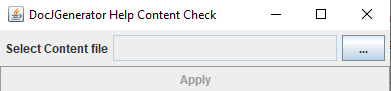
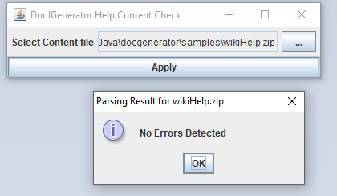
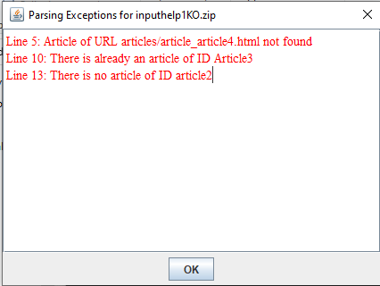

Home
Categories
Dictionary
Download
Project Details
Changes Log
What Links Here
How To
Syntax
FAQ
License
Checking the content of the Help archive
The
Normally you don't need to check the content of the archive if it has been generated by the tool, but it can be useful to use it if you produced the content manually .
After selecting the zip file containing the help content archive, and click on the Apply button, you will have the following popup window if all is correct:
If some of the elements are incorrect, the following opup window will appear:
docGeneHelpChecker.jar tool allows to check the content of a Help content archive. It checks that the XML database is valid, and that the articles which are referred exist. This tool is under the BSD license, as the Help API.Normally you don't need to check the content of the archive if it has been generated by the tool, but it can be useful to use it if you produced the content manually .
Usage of the tool
The tool presents this simple interface:
After selecting the zip file containing the help content archive, and click on the Apply button, you will have the following popup window if all is correct:

If some of the elements are incorrect, the following opup window will appear:

List of checks performed by the tool
The tool will parse the database in the help archive. The tool can emit the following error messages:| Error message | Reason |
|---|---|
There is already an article of ID article ID |
The article ID already exists in the database |
Article of URL article URL not found |
The URL for the article is not found |
MalformedURLException for article of ID article ID |
The URL for the article is not well-formed |
There is no article of ID article ID |
The article ID already exists in the database. It can appear for example when referencing an article in a chapter |
There is no title of ID title ID in article article ID |
The title does not exist for the article in the article html file |
Dependencies of the tool
The toll has only one dependency to thejsoup.jar library, which must be in a lib directory at the same level as the jar file of the checker:docGeneHelpChecker.jar -- lib ---- jsoup.jar
See also
- DocGenerator Help feature: This article explains how to use the JavaHelp-like feature of the tool
×

Categories: JavaHelp